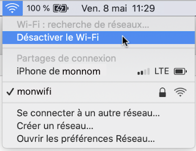
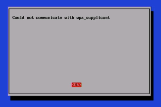
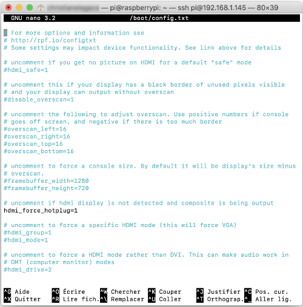
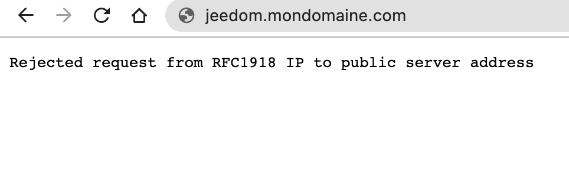
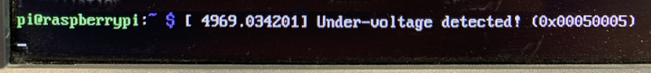
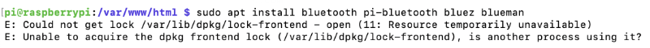

5. Dépannage sur le Raspberry Pi (troubleshooting)¶
5.1 ping vers le Raspberry Pi ne fonctionne pas¶
Problème :¶
Lorsque vous essayez de faire un ping vers le Raspberry Pi à partir de votre ordinateur, vous obtenez le message « Request timeout ».
Contexte :¶
- MacOS Mojave
- Raspberry Pi 3B+
- Raspbian 10 (Buster)
Cause possible :¶
L'adresse IP utilisée n'est pas la bonne.
Solution proposée :¶
Pour connaître l'adresse IP du Pi, branchez un clavier et un écran au Raspberry Pi et entrez la commande :
Terminal
Résultat à l'écran
Autre cause possible :¶
L'ordinateur et le Raspberry Pi ne sont pas sur le même réseau.
Solution proposée :¶
Changez le réseau de votre ordinateur ou du Raspberry Pi afin que les deux appareils puissent communiquer ensemble.
Autre cause possible :¶
Le Pi n'a pas de connexion réseau. Vous le savez puisque lorsque vous faites ping 8.8.8.8 (serveur DNS de Google) à partir du Raspberry Pi, vous obtenez le message « Request timeout ».
Autre façon de le savoir : dans une fenêtre de commande sur votre ordinateur Mac ou Linux, entrez la commande traceroute (ou TRACERT sous Windows) suivie de l'adresse IP du Pi. Si le Pi n'a pas de connexion réseau, vous obtiendrez le message « Host is down ».
Attention : vous obtiendrez le même résultat si vous travaillez avec la mauvaise adresse IP.
Résultat à l'écran
MBPdeMonNom:~ monnom$ traceroute 192.168.1.145
traceroute to 192.168.1.145 (192.168.1.145), 64 hops max, 52 byte packets
1 \* \* \*
2 \* \*traceroute: sendto: No route to host
traceroute: wrote 192.168.1.145 52 chars, ret=-1
\*
traceroute: sendto: Host is down
3 traceroute: wrote 192.168.1.145 52 chars, ret=-1
\*traceroute: sendto: Host is down
traceroute: wrote 192.168.1.145 52 chars, ret=-1
\*traceroute: sendto: Host is down
traceroute: wrote 192.168.1.145 52 chars, ret=-1
^Z
Solution proposée :¶
Suivez les conseils prodigués ici pour régler votre problème : https://docs.dataplicity.com/docs/get-pi-connected-to-the-internet.
Autre cause possible :¶
Problème de connectivité intermittent sur votre ordinateur.
Solution proposée :¶
Ceci arrive parfois sur mon MacBook Pro. Il suffit de désactiver puis de réactiver le Wi-Fi pour régler le problème.

Autre cause possible :¶
Il y a une configuration du réseau qui empêche les communications pair-à-pair (peer-to-peer).
Solution proposée :¶
Validez les configurations du réseau avec le gestionnaire du réseau.
En dernier recours¶
Si vous n'arrivez toujours pas à réaliser le ping et que toutes vos configurations semblent correctes, il vous reste l'option de connecter un clavier et un écran au Raspberry Pi plutôt que de s'y connecter via SSH.
Si c'est d'une autre communication réseau dont vous avez besoin, essayez de brancher le Pi avec un fil RJ-45.
5.2 Le Pi n'a aucune adresse IP¶
Problème :¶
Lorsque vous tentez de vous connecter via SSH à votre Raspberry Pi, rien ne fonctionne.
Et si vous branchez un clavier et un écran au Pi et que vous demandez l'adresse IP à l'aide de la commande hostname -I, il n'y en a aucune.
Résultat à l'écran
Contexte :¶
- Raspbian 11 (bullseye)
Cause possible :¶
Le Wi-Fi n'a pas été configuré sur le Pi.
Solution proposée :¶
Pour configurer le Wi-Fi sans interface graphique, suivez ces instructions.
Elles permettent de faire la configuration sans nécessiter écran ni clavier.
Notez que vous pourriez également effectuer les configurations directement sur le Pi en éditant plutôt le fichier /etc/wpa_supplicant/wpa_supplicant.conf.
- Insérez la carte micro SD dans votre ordinateur.
- Créez un fichier nommé wpa_supplicant.conf à la racine de la partition boot.
Sous Windows, utilisez l'utilitaire de texte de votre choix.
Sous Mac ou Linux, utilisez ces commandes :
Terminal
Remarque : ce fichier sera automatiquement déplacé vers le dossier /etc/wpa_supplicant la première fois que le Pi sera démarré. * Copiez les instructions suivantes dans le fichier. Ajustez le nom du réseau et le mot de passe pour y accéder. Si vous n'êtes pas au Canada, changez CA pour le code à 2 lettres de votre pays.
Fichier wpa_supplicant.conf
country=CA
ctrl\_interface=DIR=/var/run/wpa\_supplicant GROUP=netdev
update\_config=1
network={
ssid="NOM-DU-RESEAU"
psk="MOT-DE-PASSE-DU-RESEAU"
}
Fichier wpa_supplicant.conf
* Si vous avez utilisé nano pour éditer le fichier, appuyez sur Ctrl + X puis O (ou Y si votre OS est en anglais) pour enregistrer les modifications. * Redémarrez ensuite le Pi.Autre cause possible :¶
Les configurations sont faites pour un réseau 5 GHz alors que le Raspberry Pi modèle 3B+ que vous utilisez ne supporte que le 2.4 Ghz.
Solution proposée :¶
Modifiez les configurations pour utiliser le réseau 2.4 GHz ou changez le Raspberry Pi pour un modèle qui supporte le 5 GHz (à partir de la version 4).
Remarquez que sur certains réseaux, le 2.4 GHz et le 5 GHz portent le même nom alors le réseau de la bonne fréquence sera automatiquement utilisé.
Autre cause possible :¶
Le fichier wpa_supplicant.conf cause problème pour une raison inconnue.
Ceci fait en sorte que lorsque vous faites sudo raspi-config pour configurer le Wi-Fi, vous obtenez le message « Could not communicate with wpa_supplicant ».

Dans certains cas, vous pourriez avoir plutôt le message « No wireless interface found ».

Solution proposée :¶
Supprimez le fichier wpa_supplicant.conf :
Terminal
Recréez ce fichier comme suit :
Terminal
Inscrivez-y les informations pour votre réseau Wi-Fi tel que montré plus haut puis redémarrez le Pi.
Autre cause possible :¶
Un problème a été détecté pendant que le système tentait de recourir au service DHCP lors du démarrage, par exemmple un problème de voltage trop bas.
L'outil rfkill (Radio Frequency Kill) a bloqué le Wi-Fi pour protéger le système.
D'ailleurs, ceci peut être vérifié à l'aide de cette commande :
Terminal
Résultat à l'écran
0: phy0: Wireless LAN
Soft blocked: yes
Hard blocked: no
1: hci0: Bluetooth
Soft blocked: yes
Hard blocked: no
Solution proposée :¶
Débarrez le Wi-Fi avec cette commande puis redémarrez le système.
Terminal
Demandez à Raspberry Pi OS d'activer le Wi-Fi :
Terminal
Vérifiez maintenant que vous avez une adresse IP :
Terminal
Si vous n'avez toujours pas d'adresse, redémarrez le Raspberry Pi.
Terminal
Si le problème persiste, entrez la commande suivante pour réinitialiser le réseau.
Terminal
5.3 Le Pi n'a que l'adresse 127.0.0.1¶
Problème :¶
Lorsque vous demandez au Pi son adresse IP il ne donne que l'adresse 127.0.0.1.
Contexte :¶
- Raspbian 10 (buster)
Cause possible :¶
Vous avez utilisé la mauvaise commande.
Solution proposée :¶
Utilisez la commande hostname -I (notez le i majuscule) pour obtenir l'adresse IP.
Si vous utilisez un i minuscule, c'est normal de ne voir que 127.0.0.1.
5.4 Aucun accès au réseau (message Wi-Fi is currently blocked by rfkill)¶
Problème :¶
Lorsque vous démarrez votre Raspberry Pi, vous n'obtenez aucune adresse IP. La console affiche entre autres le message « Wi-Fi is currently blocked by rfkill ».
Ceci peut également se produire après des modifications aux configurations du réseau. Vous obtenez alors le message « RTNETLINK answers: Operation not possible due to RF-kill ».
Contexte :¶
- Rasbian 10 (buster)
Cause possible :¶
Un problème a été détecté pendant que le système tentait de recourir au service DHCP pendant le démarrage, par exemmple un problème de voltage trop bas.
L'outil rfkill (Radio Frequency Kill) a bloqué le Wi-Fi pour protéger le système.
D'ailleurs, ceci peut être vérifié à l'aide de cette commande :
Terminal
Résultat à l'écran
0: phy0: Wireless LAN
Soft blocked: yes
Hard blocked: no
1: hci0: Bluetooth
Soft blocked: yes
Hard blocked: no
Solution proposée :¶
Débarrez le Wi-Fi avec cette commande puis redémarrez le système.
Terminal
Demandez à Raspberry Pi OS d'activer le Wi-Fi :
Terminal
Vérifiez maintenant que vous avez une adresse IP :
Terminal
Si vous n'avez toujours pas d'adresse, redémarrez le Raspberry Pi.
Terminal
Si le problème persiste, entrez la commande suivante pour réinitialiser le réseau.
Terminal
5.5 Aucun accès au réseau (message Could not communicate with wpa_supplicant)¶
Problème :¶
Lorsque vous démarrez votre Raspberry Pi, vous n'obtenez aucune adresse IP. Lorsque vous faites sudo raspi-config pour configurer le Wi-Fi, vous obtenez le message « Could not communicate with wpa_supplicant ».
Dans certains cas, vous pourriez avoir plutôt le message « No wireless interface found ».
Contexte :¶
- Rasbian 10 (buster)
Cause possible :¶
Le fichier wpa_supplicant.conf cause problème pour une raison inconnue.
Solution proposée :¶
Supprimez le fichier wpa_supplicant.conf :
Terminal
Recréez ce fichier comme suit :
Terminal
Inscrivez-y les informations pour votre réseau Wi-Fi.
Fichier wpa_supplicant.conf
country=CA
ctrl\_interface=DIR=/var/run/wpa\_supplicant GROUP=netdev
update\_config=1
network={
ssid="NOM-DU-RESEAU"
psk="MOT-DE-PASSE-DU-RESEAU"
}
Appuyez sur Ctrl + X puis O (ou Y si votre OS est en anglais) pour enregistrer les modifications.
Une fois les informations entrées, demandez à Raspberry Pi OS de les prendre en compte :
Terminal
Vérifiez maintenant que vous avez une adresse IP :
Terminal
Si vous n'avez toujours pas d'adresse, redémarrez le Raspberry Pi.
Terminal
Si le problème persiste, entrez la commande suivante pour réinitialiser le réseau.
Terminal
5.6 Aucun accès réseau (message Network is unreachable)¶
Problème :¶
Lorsque vous démarrez votre Raspberry Pi, vous n'obtenez aucune adresse IP. Lorsque vous faites ping 8.8.8.8 pour vérifier si Google peut être rejoint, vous obtenez le message « Network is unreachable ».
Résultat à l'écran
De plus, quand vous demandez d'afficher la table des routes à l'aide de la commande route -n, vous obtenez une table vide.
Résultat à l'écran
pi@raspberry: ~ $ route -n
Kernel IP routing table
Destination Gateway Genmask Flags Metric Ref Use Iface
Autre test : quand vous vérifiez l'état du réseau sans fil à l'aide de la commande cat /sys/class/net/wlan0/operstate, vous obtenez le mot down.
Résultat à l'écran
Contexte :¶
- Rasbian 10 (buster)
Cause possible :¶
Les configurations du réseau sans fil ne sont pas correctes.
Solution proposée :¶
Attention : cette solution s'applique à un réseau géré par dhcpcd. Depuis Raspberry Pi OS Bookworm en 2023, le gestionnaire de réseau par défaut est plutôt Network Manager.
Alors que la carte micro SD est insérée dans votre ordinateur, créez un fichier nommé wpa_supplicant.conf à la racine de sa partition boot.
Sous Windows, utilisez l'utilitaire de texte de votre choix.
Sous Mac ou Linux, utilisez ces commandes :
Terminal
Copiez les instructions suivantes dans le fichier. Ajustez le nom du réseau et le mot de passe pour y accéder.
Si vous utilisez un Raspberry Pi 3B+ ou moins récent, vous devez utiliser un Wi-Fi de 2.4 GHz.
Même avec le Raspberry Pi 4, il arrive que le Wi-Fi de 5 GHz soit moins stable. Choisir un Wi-Fi de 2.4 GHz pourrait régler le problème.
Fichier wpa_supplicant.conf
country=CA
ctrl\_interface=DIR=/var/run/wpa\_supplicant GROUP=netdev
update\_config=1
network={
ssid="NOM-DU-RESEAU"
psk="MOT-DE-PASSE-DU-RESEAU"
}
Redémarrez ensuite le Raspberry Pi pour que les configurations soient prises en compte.
5.7 Erreur « Connection refused »¶
Problème :¶
Lorsque vous tentez de vous brancher via SSH sur le Raspberry Pi, vous obtenez le message « Connection refused ».
Résultat à l'écran
monnom@MacBook-Pro-de-MonNom ~ %ssh pi@192.168.1.145
ssh: connect to host 192.168.1.145 port 22: Connection refused
Contexte :¶
- Raspberry Pi 4
- Raspberry Pi OS Lite 10 (Buster)
Cause possible :¶
SSH n'a pas été activé sur le Raspberry Pi.
Solution proposée :¶
Si vous avez accès à un clavier et à un écran branchés sur le Pi, entrez les commandes suivantes :
Terminal
Si vous ne disposez pas d'un écran et d'un clavier pour travailler directement sur le Pi, vous pouvez activer SSH avec une méthode dite headless.
Il s'agit d'insérer la carte micro SD dans le lecteur de cartes de votre ordinateur et de créer un petit fichier vide nommé ssh à la racine de la partition boot.
Sous Mac ou Linux, le fichier sera créé à l'aide de la commande suivante :
Terminal
Sous Windows, vous pouvez ouvrir le gestionnaire de fichier, vous rendre à la racine de la partition boot puis créer le fichier à l'aide d'un clic droit / Nouveau / Document texte. Attention : le fichier doit s'appeler ssh sans extension.
Une fois le fichier créé, vous pouvez retirer la carte micro SD de façon sécuritaire, l'insérer dans le Rapsberry Pi puis mettre le Pi sous tension.
Remarquez qu'au prochain démarrage du Pi, ce fichier disparaîtra mais le SSH demeurera actif.
Autre cause possible :¶
Vous avez tenté de vous connecter avec des informations erronées trop souvent alors l'adresse IP de votre ordinateur a été bannie (liste noire ou black list).
Ceci est probablement dû au fait que l'administrateur du Raspberry Pi a installé un logiciel du genre fail2ban et l'a configuré pour protéger le Raspberry Pi contre des tentatives d'attaques par force brute.
Pour savoir si c'est le cas pour vous, branchez un écran et un clavier au Raspberry Pi puis entrez cette commande :
Terminal du Raspberry Pi
Si vous obtenez le message « iptables: command not found », vous devrez installer iptables.
Terminal du Raspberry Pi
Vous saurez que votre adresse IP a été bannie si vous voyez la valeur REJECTED dans la colonne target.
Résultat à l'écran
pi@raspberrypi:~ $ sudo iptables -L -nv
Chain INPUT (policy ACCEPT 0 packets, 0 bytes)
pkts bytes target prot opt in out source destination
1 64 f2b-sshd tcp -- \* \* 0.0.0.0/0 0.0.0.0/0 multiport dports 22
Chain FORWARD (policy ACCEPT 0 packets, 0 bytes)
pkts bytes target prot opt in out source destination
Chain OUTPUT (policy ACCEPT 0 packets, 0 bytes)
pkts bytes target prot opt in out source destination
Chain f2b-sshd (1 references)
pkts bytes target prot opt in out source destination
1 64 REJECT all -- \* \* 192.168.1.150 0.0.0.0/0 reject-with icmp-port-unreachable
0 0 RETURN all -- \* \* 0.0.0.0/0 0.0.0.0/0
Solution proposée :¶
La première étape consiste à trouver le nom du service qui vous a banni.
Terminal du Raspberry Pi
Si c'est effectivement vos tentatives de connection via SSH qui sont en cause, vous verrez sshd.
Résultat à l'écran
Pour que la connection SSH soit à nouveau possible à partir de votre adresse IP, lancez cette commande après avoir ajusté votre adresse IP.
Terminal du Raspberry Pi
Pour plus d'information¶
« How to Unban an IP properly with Fail2Ban ». Server Fault. https://serverfault.com/questions/285256/how-to-unban-an-ip-properly-with-fail2ban
5.8 Erreur « Le fichier Release n'est pas encore valide »¶
Problème :¶
Lorsque vous essayez de faire une mise à jour de Raspbian à l'aide de la commande sudo apt-get update, vous obtenez un message du genre « Le fichier « Release » pour http://raspbian.raspberrypi.org/raspbian/dists/buster/InRelease n'est pas encore valable. Les mises à jour depuis ce dépôt ne s'effectueront pas ».
ou, en anglais :
« Release file for http://raspbian.raspberrypi.org/raspbian/dists/buster/InRelease is not valid yet. Updates for this repository will not be applied. ».

Contexte :¶
- Raspberry Pi 3B
- Raspbian 10 (Buster)
Cause possible :¶
L'horloge du Raspberry Pi n'est pas bien configurée.
Solution proposée :¶
Mettez l'horloge à jour à l'aide de la commande suivante, en remplaçant A:M:J HH ss par la date et l'heure voulues :
ss par la date et l'heure voulues :
Terminal
Autre cause possible :¶
Le fichier Release présent à la racine du dépôt n'est pas à jour. Ce fichier permet notamment de vérifier l'intégrité des paquets.
Autre solution proposée :¶
Si vous faites confiance à ce site, relancez la commande à l'aide de l'option --allow-releaseinfo-change.
Terminal
Autre cause possible :¶
Un problème de réseautique empêche le Raspberry Pi d'accéder aux ressources internet dont il a besoin.
Autre solution proposée :¶
Si vous n'avez pas accès à la modification des règles de routage, vous pouvez tenter de passer d'un réseau WI-FI à un réseau câblé ou vice-versa. Il arrive que les règles soient différentes entre les deux.
Si vous travaillez avec un Raspberry Pi 3B, sachez qu'il ne supporte que le Wi-Fi 2.4 GHz alors que le 3B+ et les suivants supportent également le 5 GHz.
5.9 Écran noir our message « Digital power saving mode » à l'écran¶
Problème :¶
Lorsque vous branchez un moniteur à votre Raspberry Pi, l'écran est tout noir. Un rectangle avec le message « DIGITAL POWER SAVING MODE » ou « DVI-D POWER SAVING MODE » apparaît puis disparaît.
Parfois,le message peut être plutôt « Câble de signal non connecté ».
Ce message indique généralement que l'écran ne reçoit pas de signal de l'ordinateur.
Contexte :¶
- Raspberry Pi 4
Cause possible :¶
Le câble pour connecter l'écran est mal branché ou défectueux.
Solution proposée :¶
Vérifier les branchements et si le problème n'est pas réglé, essayer avec un autre câble.
Autre cause possible :¶
Le signal envoyé par le Raspberry Pi vers l'écran n'est pas suffisamment fort pour que l'écran détecte la présence du Pi.
Solution proposée :¶
Branchez-vous au Pi via SSH (ou retirez la carte micro SD et insérez-la dans votre ordinateur pour pouvoir modifier ses fichiers) puis éditez le fichier /boot/config.txt. Ceci peut être fait à l'aide de l'éditeur Nano :
Terminal
Vous devez enlever le # devant la ligne hdmi_force_hotplug afin d'activer cette configuration.
Fichier /boot/config.txt

Pour sortir de Nano en enregistrant les modifications, appuyez sur Ctrl + o, appuyez sur Entrée puis faites Ctrl + x.
Vous devrez redémarrer le Pi pour que les nouvelles configurations soient prises en compte.
Si ça ne fonctionne pas, enlevez le # devant une seconde configuration : hdmi_drive=2. Enregistrez puis redémarrez le Pi.
Fichier /boot/config.txt
# uncomment to force a HDMI mode rather than DVI. This can make audio work in
# DMT (computer monitor) modes
hdmi\_drive=2
Si le problème n'est toujours pas réglé, éditez à nouveau le fichier /boot/config.txt et cette fois, enlevez le # devant la configuration hdmi_safe = 1. Remettez un # devant les deux autres lignes.
Fichier /boot/config.txt
Si tout se passe bien, vous devriez voir l'affichage du Raspberry Pi mais en très gros et légèrement déformé. Même si l'affichage n'est pas intéressant, ceci indique que le signal peut se rendre, donc il n'y a pas un problème de câble et on sait que le Pi est capable d'envoyer un signal assez fort.
Voici ce que je vois sous Raspberry Pi OS complet. Sous Raspberry Pi OS Lite, même déformation mais sans interface graphique.

La solution finale consiste généralement à essayer d'enlever et de remettre un # devant les différentes configurations dans le fichier /boot/config.txt.
Pour plus d'information¶
« Affichage HDMI de la Raspberry Pi qui ne marche pas, la solution ! ». Raspberry Pi. https://raspberry-pi.fr/hdmi-raspberry-pi-marche-pas-solution/
5.10 WARNING: REMOTE HOST IDENTIFICATION HAS CHANGED!¶
Problème :¶
Lorsque vous tentez de vous connecter au Raspberry Pi via SSH, vous obtenez le message « WARNING: REMOTE HOST IDENTIFICATION HAS CHANGED! »
Résultat à l'écran
MacBook-Pro-de-MonNom:~ monnom$ ssh pi@192.168.1.145
@@@@@@@@@@@@@@@@@@@@@@@@@@@@@@@@@@@@@@@@@@@@@@@@@@@@@@@@@@@
@ WARNING: REMOTE HOST IDENTIFICATION HAS CHANGED! @
@@@@@@@@@@@@@@@@@@@@@@@@@@@@@@@@@@@@@@@@@@@@@@@@@@@@@@@@@@@
IT IS POSSIBLE THAT SOMEONE IS DOING SOMETHING NASTY!
Someone could be eavesdropping on you right now (man-in-the-middle attack)!
It is also possible that a host key has just been changed.
The fingerprint for the ECDSA key sent by the remote host is
SHA256:XuhSy6HE1PkibkA17UpvKSLNuStDY73bfGhip7KVQ6U.
Please contact your system administrator.
Add correct host key in /Users/monnom/.ssh/known\_hosts to get rid of this message.
Offending ECDSA key in /Users/monnom/.ssh/known\_hosts:10
ECDSA host key for 192.168.1.145 has changed and you have requested strict checking.
Host key verification failed.
Contexte :¶
- Raspbian 10 (buster)
Cause possible :¶
Il y a un problème avec le fichier known_hosts car les clés SSH ont changé.
Solution proposée :¶
Retirez l'information sur cette adresse IP du fichier known_hosts comme suit en prenant soin d'ajuster l'adresse IP du Pi.
Terminal de l'ordinateur
Si vous utilisez un port pour la connexion SSH, par exemple le port 22222, la syntaxe sera comme suit.
Notez la présence des guillemets alentour de l'adresse IP et du port. Ceci est nécessaire avec un shell zsh puisque ce shell interprète les crochets carrés comme une série de choix.
Terminal de l'ordinateur
La prochaine fois que vous tenterez de vous connecter, vous devrez confirmer que vous désirez vous connecter.
Résultat à l'écran
MacBook-Pro-de-MonNom:~ monnom$ ssh-keygen -R 192.168.1.145
# Host 192.168.1.145 found: line 10
/Users/monnom/.ssh/known\_hosts updated.
Original contents retained as /Users/monnom/.ssh/known\_hosts.old
MacBook-Pro-de-MonNom:~ monnom$ ssh pi@192.168.1.145
The authenticity of host '192.168.1.145 (192.168.1.145)' can't be established.
ECDSA key fingerprint is SHA256:XuhSy6HE1PkibkA17UpvKSLNuStDY73bfGhip7KVQ6U.
Are you sure you want to continue connecting (yes/no/[fingerprint])? yes
Warning: Permanently added '192.168.1.145' (ECDSA) to the list of known hosts.
pi@192.168.1.145's password:
5.11 Erreur « Rejected request from RFC1918 IP to public server address »¶
Problème :¶
Lorsque vous tentez d'accéder à votre boîte domotique à l'aide de son sous-domaine configuré chez un founisseur spécialisé dans la gestion des DNS dynamiques, vous obtenez le message « Rejected request from RFC1918 IP to public server address ».

Contexte :¶
- Adresse IP dynamique
- Sous domaine réservé chez un founisseur spécialisé dans la gestion des DNS dynamiques, par exemple Duck DNS
Cause possible :¶
Vous tentez d'utiliser le sous-domaine alors que vous êtes déjà dans le même réseau que la boîte domotique.
Solution proposée :¶
Utilisez un périphérique branché sur un réseau distinc pour pouvoir utiliser le sous-domaine. Par exemple, utilisez un appareil mobile avec données mobiles (Wi-Fi désactivé).
Si vous désirez accéder à la boîte domotique à partir d'un appareil branché sur le même réseau, utilisez plutôt la technique de branchement local. Par exemple, avec Jeedom, utilisez la technique présentée ici,acceder.
5.12 Erreur « Under-voltage detected! »¶
Problème :¶
Lorsque vous branchez un écran sur votre Raspberry Pi, vous voyez à l'occasion un message du genre « [ 4969.034201] Under-voltage detected! (0x00050005) ».

Contexte :¶
- Raspberry Pi 3B+
Cause possible :¶
L'alimentation du Raspberry Pi ne fournit pas un voltage assez élevé (voltage requis : 5V).
Solution proposée :¶
Utilisez un meilleur bloc d'alimentation.
5.13 Erreur « Could not get lock /var/lib/dpkg/lock-frontend - open »¶
Problème :¶
Lorsque vous tentez d'installer un paquet avec apt install, vous voyez un message du genre « E: Could not get lock /var/lib/dpkg/lock-frontend - open (11: Resource temporarily unavailable) » suivi de « E: Unable to acquire the dpkg frontend lock (/var/lib/dpkg/lock-frontend), is another process using it? ».

Contexte :¶
- Raspberry Pi 3B+
- Raspberry Pi OS Lite 10 (Buster)
Cause possible :¶
Un processus est déjà en train d'utiliser le fichier /var/lib/dpkg/lock-frontend.
Solution proposée :¶
Patientez puis réessayez la commande.
Si cela ne fonctionne toujours pas, redémarrez le Raspberry Pi.
Pour plus d'information¶
« How To Fix Could not get lock /var/lib/dpkg/lock - open (11 Resource temporarily unavailable) Errors ». Linux Unprising. https://www.linuxuprising.com/2018/07/how-to-fix-could-not-get-lock.html
5.14 Erreur « Authentication token manipulation error »¶
Problème :¶
Lorsque vous tentez de réinitialiser le mot de passe du Raspberry Pi à l'aide de la technique qui consiste à ajouter init=/bin/sh au fichier cmdline.txt, vous obtenez le message « Authentication token manipulation error ».

Contexte :¶
- Raspberry Pi 4
- Raspberry Pi OS Lite 10 (Buster)
Cause possible :¶
Le système de fichiers n'a pas été monté.
Solution proposée :¶
À l'invite de commande (#), entrez cette commande :
Terminal
5.15 Erreur « Sap driver initialization failed »¶
Problème :¶
Lorsque vous tentez de vérifier l'état du service Bluetooth sur le Raspberry Pi, vous obtenez le message « Sap driver initialization failed ».
Résultat à l'écran
pi@raspberrypi:~ $ service bluetooth status
● bluetooth.service - Bluetooth service
Loaded: loaded (/lib/systemd/system/bluetooth.service; enabled; vendor preset: enabled)
Active: active (running) since Tue 2022-09-06 20:51:20 BST; 12min ago
Docs: man:bluetoothd(8)
Main PID: 598 (bluetoothd)
Status: "Running"
Tasks: 1 (limit: 4915)
CGroup: /system.slice/bluetooth.service
└─598 /usr/lib/bluetooth/bluetoothd
Sep 06 20:51:20 raspberrypi systemd[1]: Starting Bluetooth service...
Sep 06 20:51:20 raspberrypi bluetoothd[598]: Bluetooth daemon 5.50
Sep 06 20:51:20 raspberrypi systemd[1]: Started Bluetooth service.
Sep 06 20:51:20 raspberrypi bluetoothd[598]: Starting SDP server
Sep 06 20:51:20 raspberrypi bluetoothd[598]: Bluetooth management interface 1.18 initialized
Sep 06 20:51:20 raspberrypi bluetoothd[598]: Sap driver initialization failed.
Sep 06 20:51:20 raspberrypi bluetoothd[598]: sap-server: Operation not permitted (1)
Sep 06 20:51:20 raspberrypi bluetoothd[598]: Failed to set privacy: Rejected (0x0b)
Contexte :¶
- Raspberry Pi 4
- Raspberry Pi OS Lite 10 (Buster)
Cause possible :¶
...
Solution proposée :¶
...
5.16 Erreur « /usr/libexec/sftp-server: not found »¶
Problème :¶
Lorsque vous tentez de copier un fichier entre votre ordinateur et un Raspberry Pi en utilisant la commande scp, vous obtenez le message « sh: /usr/libexec/sftp-server: not found ».
Contexte :¶
- Raspberry Pi 4
- Raspberry Pi OS Lite 10 (Buster)
Cause possible :¶
Votre ordinateur (le client) utilise OpenSSH 9.0 ou plus récent.
Par défaut, cette version est basée sur le protocole SFTP, ce qui est incompatible avec le Pi (le serveur).
Solution proposée :¶
Ajoutez l'option -O (lettre o majuscule) pour forcer l'utilisation du protocole FTP.
Terminal